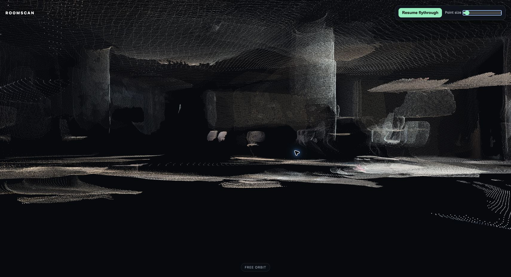

One path leaves holes.
A single person misses angles, corners, and the backs of objects.
Crowd-sourced 3D capture
Record together. ROOMSCAN combines the coverage and refreshes one browser-based model.
The problem
A single person misses angles, corners, and the backs of objects.
Moving bodies turn into floating noise unless they are removed first.
Many workflows still need specialist hardware or long processing.
The experience
Open the same URL on each phone. No app install.
Keep shared landmarks in view while the phone records.
Uploads queue safely. The open viewer swaps to each new revision.
How it works
Short clips from different positions around the room.
ROOMSCAN keeps useful frames and removes bodies.
Unordered multi-phone images become cameras and dense 3D points.
A recovered-camera flythrough plus free orbit.
Built for a live room
Every stage writes to disk before the next one begins.
Models load from a local cache; inference makes no cloud calls.
Revisions switch atomically, so viewers never see half a model.
The last useful output remains visible when a later stage fails.
Latest live run
4 phones · 30 clips · 600 stored frames
32 selected views · 1,000,000 visible points

Live demo
Join the same room, add a different angle, and watch the shared reconstruction refresh.
https://10.0.0.236:9443/Same Wi-Fi · Accept the self-signed certificate once